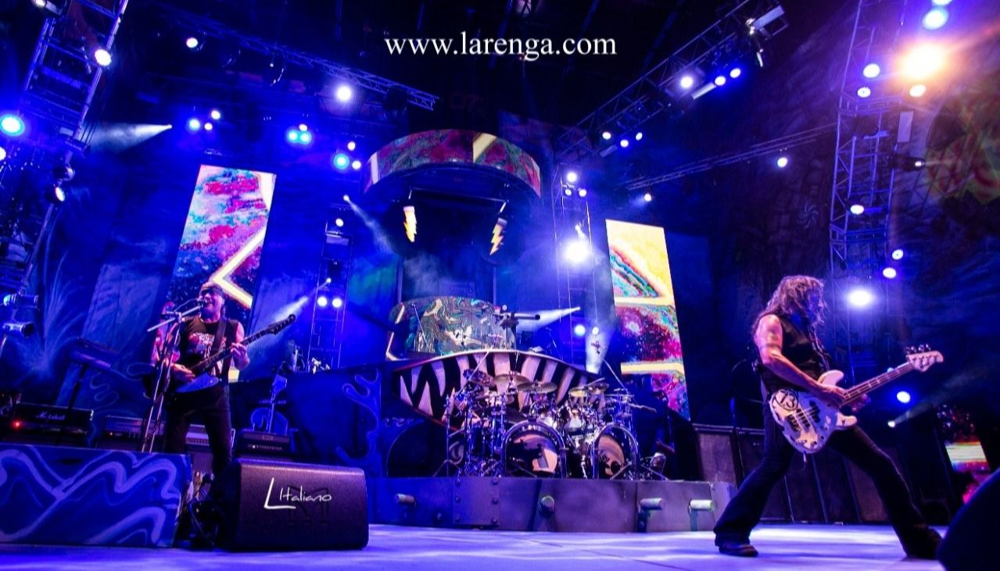

Imágenes


La Renga es un grupo musical de rock de Argentina formado en el barrio de Mataderos, Buenos Aires, en 1988. La formación está integrada por Gustavo "Chizzo" Nápoli, Gabriel "Tete" Iglesias y Jorge "Tanque" Iglesias, quienes integran el grupo desde sus inicios, mientras que Manuel "Manu" Varela se les unió en 1994, gracias a Gabriel "Chiflo" Sánchez, miembro hasta 2008.
Su carrera se basó en la autogestión, y desde 2002 cuentan con una producción independiente, manejando su propio sello, estudio y realización de sus espectáculos.